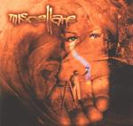

| Artist: | Miscellane |
| Title: | Painted Palm |
| Label: | Bee & Bee Records BBMI2002 |
| Length(s): | 52 minutes |
| Year(s) of release: | 2002 |
| Month of review: | [02/2002] |
| 1) | Solstice Story Part 1 | 13.56 |
| 2) | Wings | 5.38 |
| 3) | Laments | 4.31 |
| 4) | Solstice Story Part 2 | 24.15 |
| 5) | Few Letters On A Tomb | 4.24 |
Although the band is often mentioned as being a progmetal band, I have to disagree. The heavy use of guitars and drums is certainly not limited to progmetal. Because of the focus on atmosphere, melody and the "epic", the band to me sounds more like a progressive band than a progmetal band.
Orel's accented voice, as it for instance occurs in the middle of the song, often has that "tear" in it, comparable to say Damian Wilson. The accent is not a problem in my opinion; there are also many other good vocalists that have stronger accents, Aluisio Maggini of Clepsydra for instance. In the middle we get slightly folky/medieval intermezzo with various dark spoken vocals. Towards the end the music moves into a climax, building tension and gaining in power with Orel's emotional vocals leading the way.
Filled with many good themes and melodies, this is really a good track that should appeal to the larger body of symphonic prog lovers and should also be able to draw in a large part of the more progmetal oriented.
After this longish track we get two shorter ones. The first of these is Wings. The rhythm guitars feature strongly on this song which has a harder edge than the previous song, and instead of the epic qualities of the opener, the chorus of this song is quite catchy. The instrumental middle section with its heavy drums and bombastic keyboards give the song an injection of power.
Laments opens thoughfully, but soon also bursts with energy all riding on some compelling melodies. Especially nice are the interjections on piano. Again, the progmetal feel is a bit stronger than on the opener, but the band still strikes me as a progband with metallic influences. This probably is also due to the performance of the singer, who is not a typical metal singer, but whose dramatic vocals focuses more on emotion.
We come back to the Solstice story with the almost twentyfive minutes of part 2. With plenty of pomp the epic bursts forth after a somewhat moody intro. The moodiness however continues soon after with a prominent bass. Like the first part it combines majestic melodies and good moods with the progmetal of the nineties and heavy duty organ sound of older days. At times the band goes ahead quite percussively, energetically and I find myself tapping along soon enough. I good go on citing various good parts (such as the up-tempo organ round the fifteen minute mark, the moody somewhat Floydian feel at 17:00 with its grand vocal melody or the tense guitar round 21:00, the sad piano right at the end), but I hope you have gotten the picture already. Also, the band does not add much to this picture. I mean that besides the epicness of the first and this track, and the more catchy progmetal of the second and third, this more or less sums up what the band does. In that sense they are quite consistent.
The final track is Few Letters On A Tomb, opening moodily, alternated with complex linex on a biting guitar. Varied drumming and a sad piano lead up to a powerful climax. The tune from Wings returns at the very end as an afterthought.